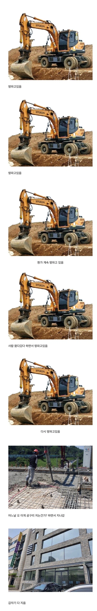

공사 현장 체감 속도.jpg
댓글
우리나라 땅이 ... 일반 땅이 아니라는점 ,..잊지말자
신월 ic 공사 언제끝나 시발 진짜 존나 막혀서 가기가싫음
동부간선도로 맛 한번 보쉴?
내가 본것만 벌써 30년째 계속 공사중인데....
서부간선도 이제 같이할 예정
존나 열받는게 왜 공사를 안하지? 하고 찾아보니 예산이 없데. 예산이... 맨날 땅 존나게 팔 돈은 있고 계획까지 다된 공사는 왜 안하는거냐? ㅅㅂ 어디 돈 없는 나라도 아니고 세금 존나 벌었다면서 왜 차 존나다니는 도로는 공사 안해줘
거기는 도시계획에 자꾸 뭐가 추가되어서 설계변경때문에 늦는거 아니었음?
거기 창동쪽은 죽기전에 공사 끝나냐
ㅋㅋㅋㅋㅋ
우리 애 대학가도 안끝날거 같은데....
ㅌㅋㅋㅋㅋㅋㅋㅋㅋㅋ우리 부모님 댁이 여기 바로 앞이라 진짜 미쳐버리겠음 갈때마다 ㅅㅂ
내가 같이 살때부터 공사해서 아직도 안끝남 ㅅㅂ
다짓고도 계속 천막 감싸져 있는게 킬포임 ㅋㅋㅋㅋ 내부공사 하느라
천막으로 가려놔서 음 뼈대작업하나보당 ㅎㅎ 하고 지나가다보면 어느새 멀쩡한 건물 솟아나있음
저건 뭐 건물 올릴 생각은 있는건가...싶다가 어느날 갑자기 완공되어있음 ㅋㅋ
아니 고압선 매설시트 있는데 냅다 치우고 찍어버리는게 어딨어요ㅠㅠㅠ
진짜 ㅋㅋㅋ 아파트 짓는거보면 땅파는거만 2~3년 한거같은데 건물은 반년도 안되서 뚝딱ㅋㅋ
근처 빌라인지 오피스텔인지 철거하고 얼마 안돼서 새건물 들어선거 보고 띠용했지 ㅋㅋㅋ
경기도에서 강남 들어가는 거기는 십년 넘게 공사만 하던데 아직도 하나?
이거 비용은 누가 감당하나 궁금하네
ㅇㅇ 땅굴 오지게 파는중
땅이 깊으면 하루에 10cm 밖에 못팜
김포쪽에서 인천공항 가는 길 도로 평생 공사하는 것 같다
왜 시발 우리집만 완공이 안돼 4개월 걸린다더니 6개월째야..
기반 다지는게 제일 중요하긴해 ㅋㅋㅋㅋㅋㅋㅋ
대충 일반 아파트 기준 일주일에 1개층은 올라가니..ㅋㅋㅋ
고등학교 3년내내 학교가는길에 이마트 지었었는데 고1때부터 고3 1학기까지 땅만 파더니 수능 끝나고 마트 오픈행사하고 있음
테란건물ㅋㅋ
땅만 몇년동안팜 ㅋㅋ
물주면 건물이 자라나나봐
기반 다지는게 시간 가장 많이 들긴 하지....